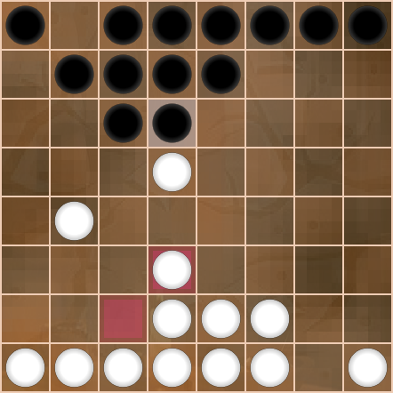
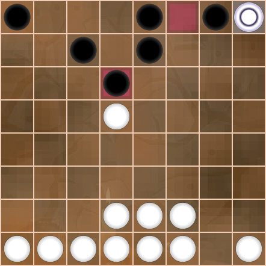
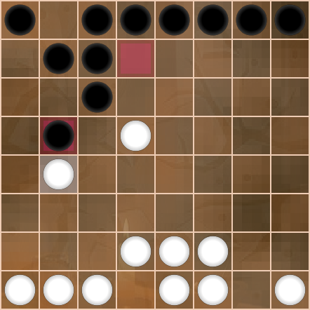
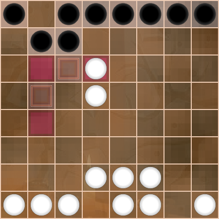

This example game shows how graphical structure is used to present a game tree with a single main line and a few nested variations.
Each game state is presented as a diagram, labeled with the move number and notation that produced this game state. The first state is zero, and indicates the game start position. This is usually the standard Dameo trapezoid, but could differ if a game begins with a handicap or from a specified position.
Moves each get their own number, so there's no need to specify a color and a move number like "black's move 3" or "... 3". Herein, the move number alone is sufficient, and the color is implied by the number. Odd numbered moves 1, 3, 5, etc. are white moves, and even numbered moves 2, 4, 6, etc. are black moves.
0. Start

Moves flow from left to right, top to bottom, so they can be read in line with the commentary. No need to jump from diagrams to text and back, imagining moves in between. Simply read the game in its natural visual form.
1. F3-G4
2. F6-G5
3. G4xG6
4. G7xG5

5. G1-G3
6. E6-E5
7. G2-G4
Only the main game line is shown without a gray background. Variations are always explored within gray boxes, indented from the left. The darker the shade of gray and the more indented, the more deeply nested the variation being considered. So a branch from the main line is presented in a light gray box, a nested variation from this branch is shown in a darker gray box, and so on. After the darker variation ends, the previous game line resumes at the same level of indentation as before. In this way, it's easy to keep track of variations and skip over the deep ones if you like.
Here we explore a variation that's obviously bad for black.
8. F7-F6

9. G4xG6xE6xE4
10. D6-E5
11. E4xE6
12. E7xE5
Now we're back to the main game line. The indentation returns to the left and the move flow continues from where move 7 left off. If you wanted to follow only the main game line, you could just ignore the whole indented section and gray box above, skipping the hypothetical bad move sequence 8 through 12.
8. F7-G6
9. G4-H5

10. G6-F5
11. G3-F4
12. F5xF3
13. H5xF5xD5
14. D6xD4
15. D3xD5
16. F3xD3xB3
17. B2xB4
18. B8-D6
19. C2-D3
20. D6xD4
21. D3xD5
Let's explore some variations with black playing giveaway Dameo.
22. C6-B5
23. B4xB6xB8
This is a nested variation showing how to trap the new king.
24. D8-D6
25. B8xD8
26. E8xC8
Here's another variation that lets the king escape with capture.
Notice the horizontal divider between this variation and the one above. Both of these variations have the same preceding move, each showing a different continuation from move 24.
24. A8-B7
25. B8xB4
The horizontal divider visually separates parallel game lines so that text like this can interrupt a move sequence without following moves being mistaken for a new variation. This move 26 continues along the same line after 25. B8xB4.
26. D8-B6
27. B4xB8xD8xD6
If we're really playing giveaway Dameo, better let the king fly free with as many captures as possible, setting up the next!
24. D8-F6
25. B8xD8xD6xH6
26. H8-H7
27. H6xH8
28. F8-D6
29. H8xF8xC8xC6xH6
And back to the main line again. What a game! Good thing it's only made up to illustrate the layout conventions. Real games to follow will illustrate Dameo's more aesthetically pleasing points of interest and surprise.
22. E7-D6
23. D1-D3
24. D6xD4
25. D3xD5
26. D7-B5
27. B4xB6xD6
28. D8-D7
29. D6xD8xB8xB6
Even without a visual representation for a resignation move, here it's clear that black is resigning because the move number is even.
Final game scores are shown with integers, no fractional portions for draws. Two points for a win, zero points for a loss, one and one for a draw. White's score is first, followed by a colon and then black's score. In this case, white wins. 2:0
30. Resign